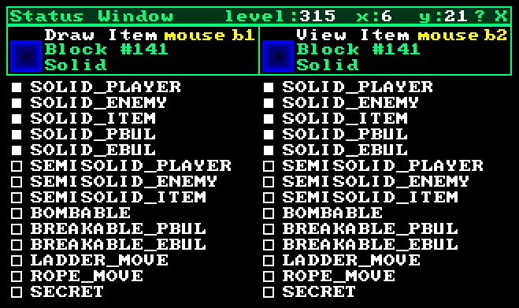
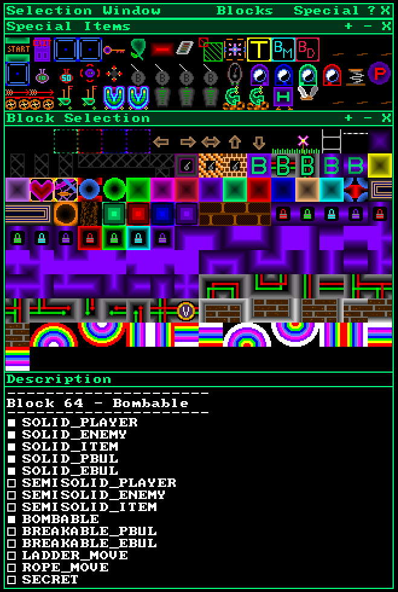
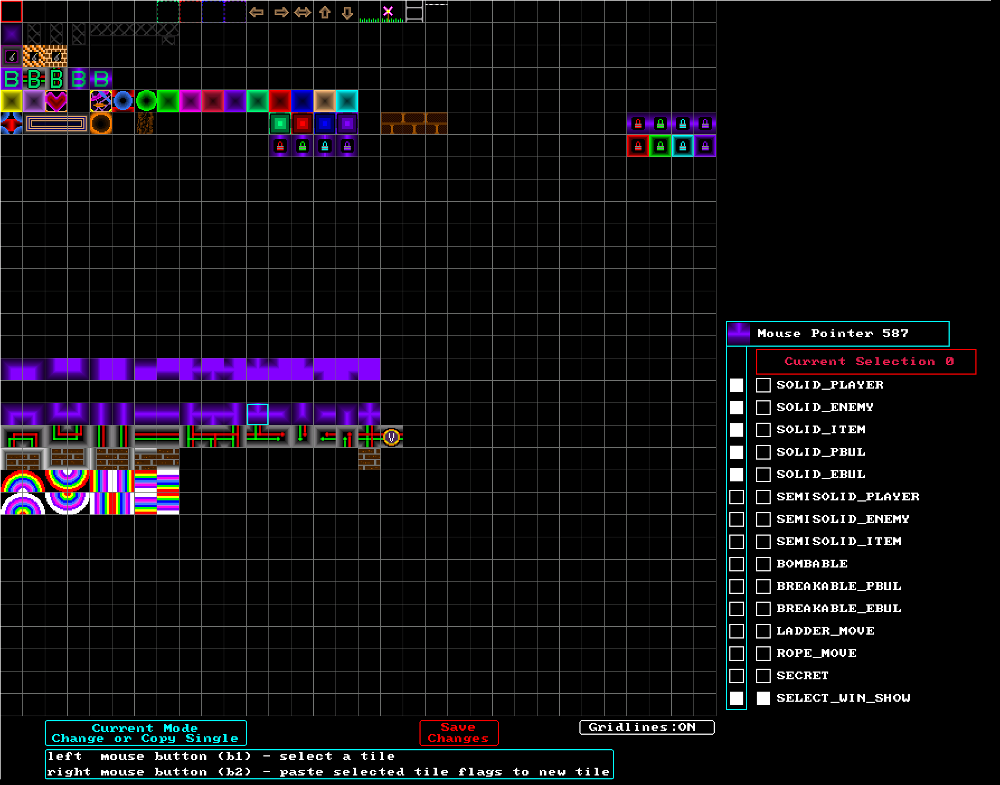
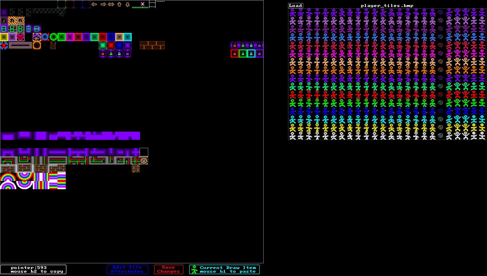
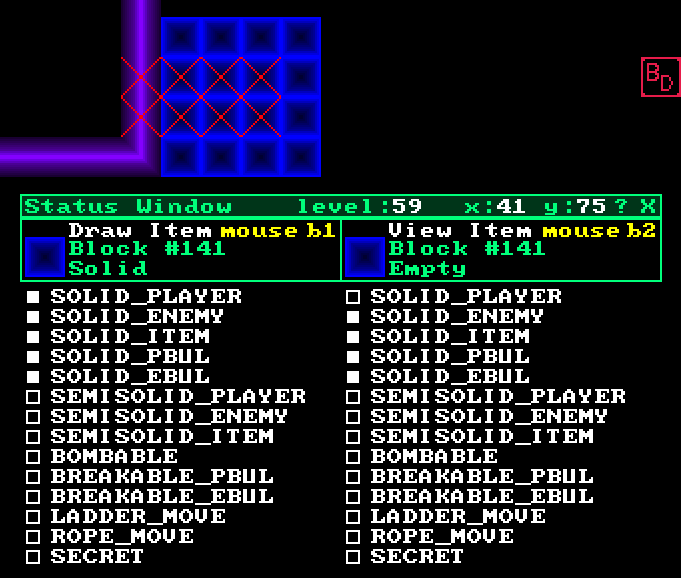

Purple Martians
Technical Code Descriptions
Block Flags
Overview
Original Method
New Method
Flag Setup
Using Flags
Default Block Flags
Changing Block Flags
Block Sources in Level Editor
Changing Default Flags (advanced)
Block Tile Editor (advanced)
Show Non-Default Block Flags
Conclusion
Overview
Each level is made up of a grid of 100 x 100 blocks stored in an array of integers.
int mLevel.l[100][100];
Each integer is an index to the tile that is drawn at that position on the level. (see tiles)
Original Method
The original method used the tile number to control the attributes of the block.
Different ranges had different properties:
0 - 31 - empty
32 - 63 - semi-solid (players and enemies can jump through from below)
64 - 95 - bombable (will be destroyed by bombs)
96 - 127 - breakable (will be destroyed by bullets)
128+ - solid
New Method
The new method uses bit flags stored in the higher, unused bits of the integers.
1024 possible tiles (0-1023) uses 9 bits which leaves 23 bits free to be used for various flags.
Flag Setup
This is how the flags are setup:
#define PM_BTILE_SOLID_PLAYER 0b00000000000000010000000000000000
#define PM_BTILE_SOLID_ENEMY 0b00000000000000100000000000000000
#define PM_BTILE_SOLID_ITEM 0b00000000000001000000000000000000
#define PM_BTILE_SOLID_PBUL 0b00000000000010000000000000000000
#define PM_BTILE_SOLID_EBUL 0b00000000000100000000000000000000
#define PM_BTILE_SEMISOLID_PLAYER 0b00000000001000000000000000000000
#define PM_BTILE_SEMISOLID_ENEMY 0b00000000010000000000000000000000
#define PM_BTILE_SEMISOLID_ITEM 0b00000000100000000000000000000000
#define PM_BTILE_BOMBABLE 0b00000001000000000000000000000000
#define PM_BTILE_BREAKABLE_PBUL 0b00000010000000000000000000000000
#define PM_BTILE_BREAKABLE_EBUL 0b00000100000000000000000000000000
#define PM_BTILE_LADDER_MOVE 0b00001000000000000000000000000000
#define PM_BTILE_ROPE_MOVE 0b00010000000000000000000000000000
#define PM_BTILE_SECRET 0b00100000000000000000000000000000
#define PM_BTILE_SHOW_SELECT_WIN 0b01000000000000000000000000000000
#define PM_BTILE_MOST_FLAGS 0b00111111111111110000000000000000
#define PM_BTILE_ALL_FLAGS 0b01111111111111110000000000000000
#define PM_BTILE_ALL_SOLID 0b00000000000111110000000000000000
#define PM_BTILE_ALL_SEMI 0b00000000111001110000000000000000
These flags are combined with the tile number and put into the level array l[100][100] to make a level.
Using Flags
When drawing a tile, this is how I get just the tile number (the lowest 9 bits)
int tile_number = mLevel.l[x][y] & 1023;
al_draw_bitmap(mBitmap.tile[tile_number], x*20, y*20, 0 );
To check a flag:
if (l[x][y] & PM_BTILE_SOLID_PLAYER) // flag is set
if (!(l[x][y] & PM_BTILE_SOLID_PLAYER)) // flag is clear
To manipulate flags:
l[x][y] |= PM_BTILE_SOLID_PLAYER; // set flag
l[x][y] &= ~PM_BTILE_SOLID_PLAYER; // clear flag
l[x][y] ^= PM_BTILE_SOLID_PLAYER; // toggle flag
Default Block Flags
There are a lot of possibilities here, but for now most blocks just have simple default flags.
// default empty blocks have no flags set
// ladder blocks are empty except for
l[x][y] |= PM_BTILE_LADDER_MOVE;
// rope blocks are empty except for
l[x][y] |= PM_BTILE_ROPE_MOVE;
// default solid blocks
l[x][y] |= PM_BTILE_SOLID_PLAYER;
l[x][y] |= PM_BTILE_SOLID_ENEMY;
l[x][y] |= PM_BTILE_SOLID_ITEM;
l[x][y] |= PM_BTILE_SOLID_PBUL;
l[x][y] |= PM_BTILE_SOLID_EBUL;
// default semi-solid blocks
l[x][y] |= PM_BTILE_SOLID_PLAYER;
l[x][y] |= PM_BTILE_SOLID_ENEMY;
l[x][y] |= PM_BTILE_SOLID_ITEM;
l[x][y] |= PM_BTILE_SEMISOLID_PLAYER;
l[x][y] |= PM_BTILE_SEMISOLID_ENEMY;
l[x][y] |= PM_BTILE_SEMISOLID_ITEM;
// default bombable blocks
l[x][y] |= PM_BTILE_SOLID_PLAYER;
l[x][y] |= PM_BTILE_SOLID_ENEMY;
l[x][y] |= PM_BTILE_SOLID_ITEM;
l[x][y] |= PM_BTILE_SOLID_PBUL;
l[x][y] |= PM_BTILE_SOLID_EBUL;
l[x][y] |= PM_BTILE_BOMBABLE;
// default breakable blocks
l[x][y] |= PM_BTILE_SOLID_PLAYER;
l[x][y] |= PM_BTILE_SOLID_ENEMY;
l[x][y] |= PM_BTILE_SOLID_ITEM;
l[x][y] |= PM_BTILE_SOLID_PBUL;
l[x][y] |= PM_BTILE_SOLID_EBUL;
l[x][y] |= PM_BTILE_BREAKABLE_PBUL;
l[x][y] |= PM_BTILE_BREAKABLE_EBUL;
Changing Block Flags
In the level editor, the block flags can be changed from their default values.
To toggle the block flag overlay, right click on the status window and choose 'Show Block Flags'.
When on, you will see the flags for the pointer item, draw item, and selection window block items.

The only flags that can be modified are the draw item flags.
Click on the rectangles to toggle the flags.
Then when you put the draw item somewhere in the level, it will have those flags.
To modify a tile already placed in the level:
- click the tile with the right mouse button (b2) to copy it to the draw item
- modify the draw item flags
- place the draw item back in the level with the left mouse button (b1)
Block Sources in Level Editor
In the level editor, you can get a block into the draw item from one of two places.
You can copy an existing block from anywhere in the level.
Or you can get it from "Block Selection" area in the "Selection Window".

Changing Default Flags (advanced)
In level editor choose "Default Flag Editor" from the menu.

Here you can see a 32x32 grid of all the block tiles, and you can change the default flags for any of them.
Notice the bottom flag "SELECT_WIN_SHOW"
This is used to determine which blocks populate the Selection Window in the level editor.
When you are done, click "Save Changes"
The default flags are stored in an array (int sa[1024][2]) and are saved to disk.
They are only used by level editor to populate the Selection Window.
Block Tile Editor (advanced)
You can manually work with block tiles with an external editor like GIMP.
They are in a 32x32 grid of 20x20 pixel tiles in the file 'block_tiles.bmp'
There is also a simple block tile editor built into the level editor to copy and move tiles.
In level editor choose "Block Tile Editor" from the menu.

On the left is the 32x32 grid of all the block tiles.
On the right is a second grid that you can load from any bmp file.
You can copy a tile from either grid with mouse b2.
You can paste a tile into the main grid with mouse b1.
Click "Save Changes" to commit your edits.
Warning! If you move tiles around, existing levels will not work!
Show Non-Default Block Flags
In the level editor, you can see the flags for any block by putting the mouse on that block.
For the great majority of the time though, the flags will be identical to the default flags.
In fact, you can turn off the flag display by typing "sbf" to get a less cluttered view.
However, when you are working with modified flags, there is a handy feature called: "Show Non-Default Block Flags"
You can toggle this on and off by typing "sndb"
When enabled, any blocks that do not have the default flags are marked to make them easier to find and work with.

This example shows normally solid blocks that have been marked not solid for players only.
Conclusion
There are so many possibilities that this opens up.
- blocks that players can pass through that enemies cannot.
- blocks that players bullets cannot pass through but enemies bullets can.
- blocks that can be destroyed by bullets, or bombs.
- blocks that can act like rope or ladders.
There are so many possible combinations!